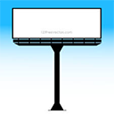
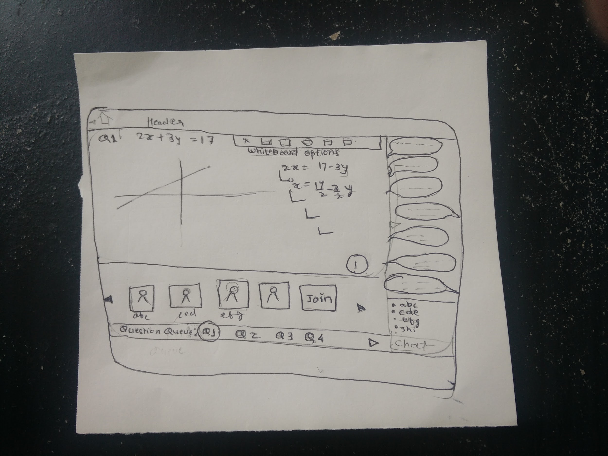
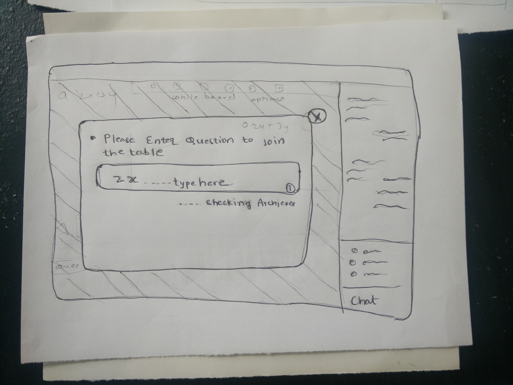
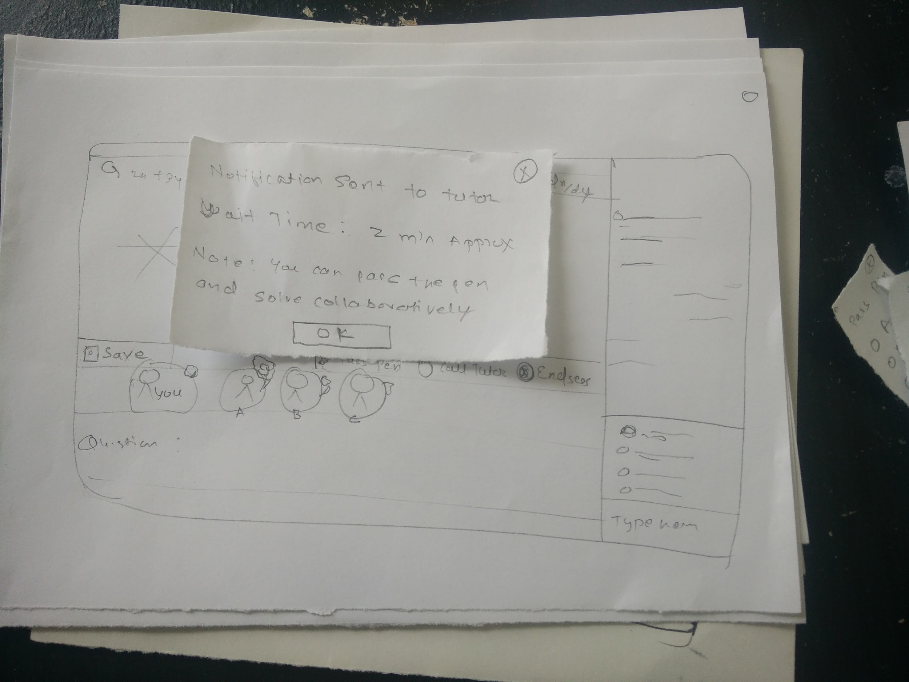
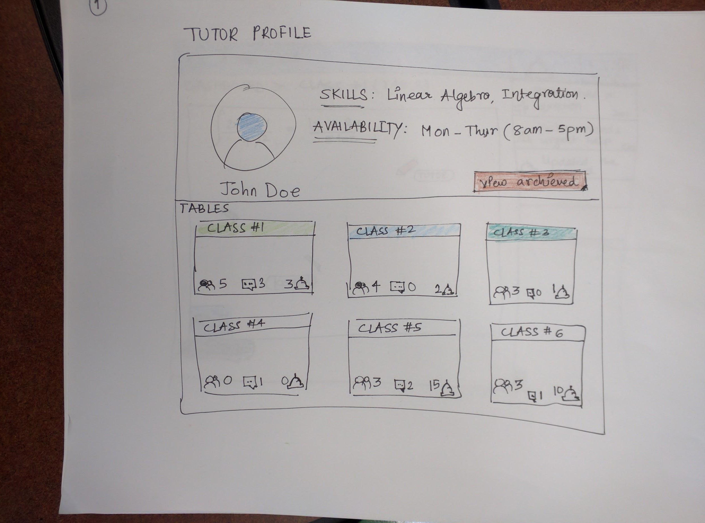
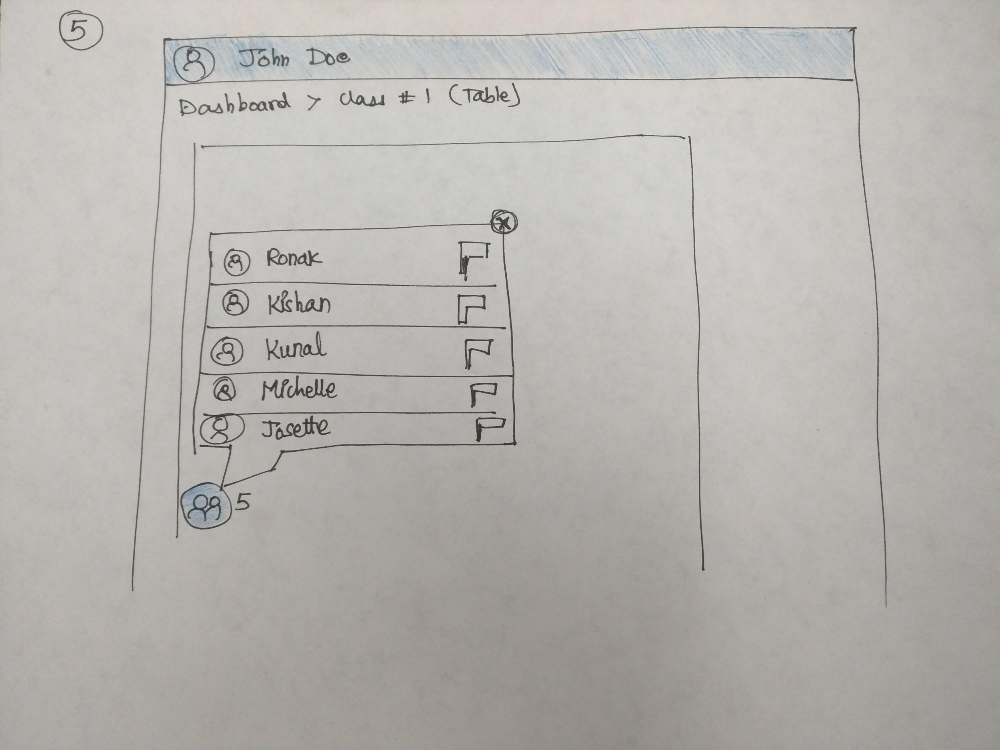
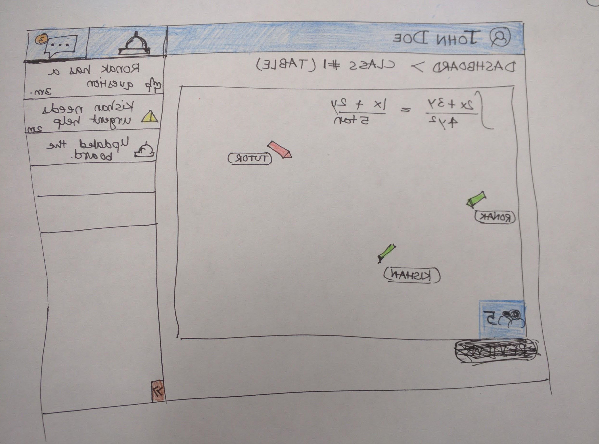
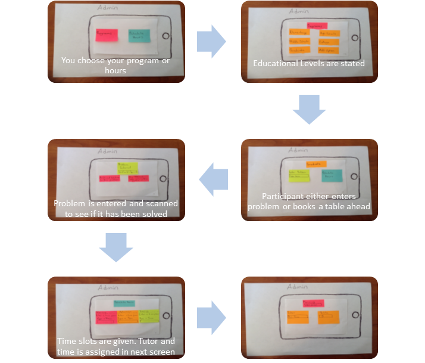

TABLES - Tutor Assisted Browser based Learning Environment for Students
My Contribution
User Interviews
Ideation and brainstorming
Low Fidelity Prototype
Usability Evaluation
Download Resources
Problem Statement
This was a final project for the prototyping class where we were supposed to follow the UX design process with extensive suse of prototyping methods. We picked up a problem space in collaborative learning out of many other ideas that the team discussed. The school has a MAC lab which is a physical collaborative learning lab for solving Math problems of undergraduate students. They
Ideation and Brainstorming
The team gathered to brainstorm different ideas for conducting user research, prototype and evaluate it with the users.
-

Drug Identification using technologyReminding to take the medicine and verifying the correct consumption of medicine is a big task. It is a common problem for Alzheimer and Dementia patients due to their restricted cognitive abilities. We plan to design a tablet application with image recognition software and a mirror to verify the medicine's shape and color.
-
Self Checkout CartPeople spend endless minutes in queues waiting to check out their items. By attaching a Self-checkout system to shopping carts queues will be avoided. This will also be useful when customers want to know if products have discounts or are on sale. In addition to that, self-checkout shopping carts will be convenient. Human error will be avoided.
-

HCC Portal for outdoor advertisingOut of home advertising media is distributed across location-based networks at venues such as cafes, bars, restaurants, health clubs, gas stations, convenience stores, and public spaces etc. We plan to bridge the gap between advertisers and advertising inventory owners. Advertisers will use the portal to reach the appropriate audience by knowing the parameters like geographic locations, gender, privacy, government approvals, expenses etc. Inventory owners will use it to design the advertisement smartly by using all the possible options including emerging technologies, HCC practices to design the advertisements to attract and engage the audience, interactive advertising
-
TABLESTutor Assisted Browser-based Learning Environment for Students (TABLES) is a collaborative online synchronous learning center for math assistance. Our proposed project is intended to recreate a MATH tutor center which provides guidance and assistance to students on mathematics concepts. However, over the time the team felt that we can apply a generic concept to our designs rather than considering only one Course - “MATHEMATICS”
Rationale behind shortlisting the TABLES idea
Considering the project requirements, team decided to go forward with TABLES project due to following restrictions and availability of the resources
- We had a limited time space
- We wanted to make an impact on something related to us
- Proximity of the MACLab enabled us to get feedback and observe at any time
Restrictions observed in MAC lab:
Using interview and observation techniques we found out the issues we want to resolve for the MAC lab. The issues can be listed as:
- Limited hours and space
- Loss of information
- Limited access
- Limited recources
Team came up with this workflow:
Prototyping
Team was used multiple techniques of prototyping and multiple rounds of prototyping to evaluate the concept, workflow, design etc in each of the phase.
Phase 1 - Concept evaluation
Our first round of prototypes covered all aspects of the collaborative tools. This included the administration role, student and tutor role. We used different interactive prototyping techniques for our first round.
- Power Point


- Paper Prototype

 - Use of Post-it notes to walk the user through the functionality

Phase 1 - Concept and Workflow Evaluation
We followed a custom approach of conducting the usability test for feedback. Initially we set up scenarios and task for cognitive walkthroughs. We also helped the participants navigate using wizard of oz. We asked them to think aloud while performing the tasks and also created a video of the session for later analysis. We organized our team efforts as dividing the tasks into facilitator, media manager and note taker. The participants were more of experts.
The following are some areas of improvements that were drawn to our attention when we showed the prototypes to two people during the session:
- The chat feature that showed student discussions was not clear. Participants had difficulty reading a long list.
- It was difficult for participants to notice the archive button.
- They find the numbers associated with courses hard to understand and did not recall their course numbers off head
- The two participants did not find the auto-check feature easily
- It was not clear to them if the equation displayed could be clicked on
- The participants did not know how to join the group chat
- User brought up an interesting point of badges and endorsement for the tutor to gain recognition
- They also ask if in the wait-time can somebody else take the pen?
- Some elements and icons of the prototype were not clear to the users, we believe it was more because of the wireframe nature of the prototype and it can be solved when we have more concrete prototypes
- They did not understand what pen control meant. This may be because they had no prior knowledge about the MACLab. Pen control is a concept familiar with visitors at the MACLab
- Finally, participants did not understand what it meant to flag a student
High Fidelity Prototype
We addressed all the issues found out during internal walkthroughs in the high fidelity prototype. We used Sketch for prototype design and marvel app to include the interactivity.
Marvel App Link to interactive prototype - https://marvelapp.com/iff8b6


For evaluation we used Think Aloud protocol and evaluated the usability with SUS

Lessons Learned
- We feel it is best practice to start prototype testing with a low fidelity prototype before investing much time and effort in a high fidelity prototype. This is because you will incorporate many changes from user testing
- Multiple usability test on your prototypes will help you refine your prototype further. We were able to test our prototype three times and helped us discover a new dimension towards our project
- To be constructive and critical about the changes made to the prototype based on user feedback. Not all user feedback was useful. Some was based on misunderstanding the idea. Therefore making drastic changes based on such feedback could have had adverse effects on out idea
- We feel that Participatory design would have helped us improve different interactions and features. Involving the end users and working alongside will be useful at least in projects which involve a complicated workflow
- For brainstorming we considered system as whole and the narrowed down it to student functionality. Then we started designing only for students. We feel we somehow underestimated the scope. Also we learned that we need to keep the buffer time for design phase as well since we uncovered many gray areas during our usability studies